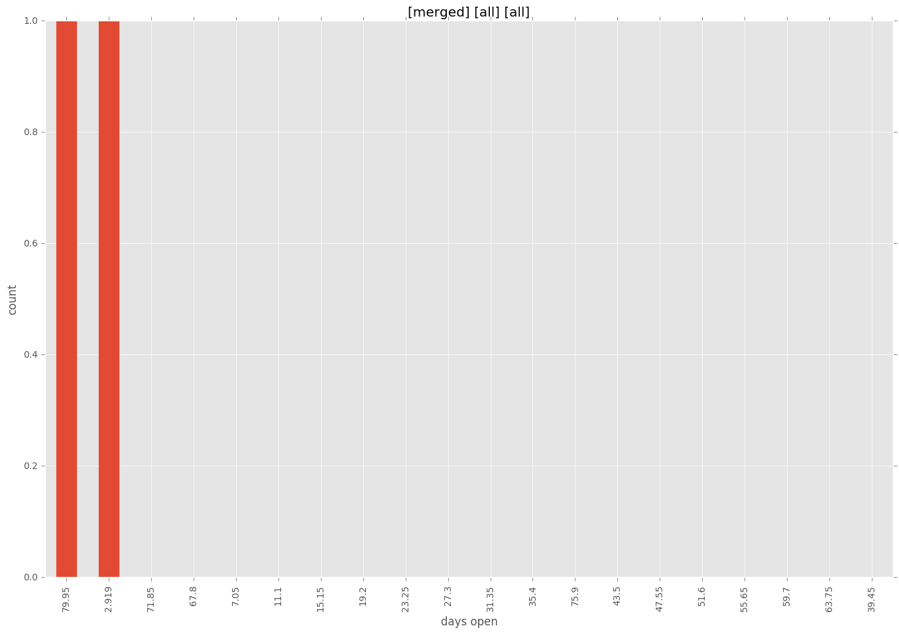
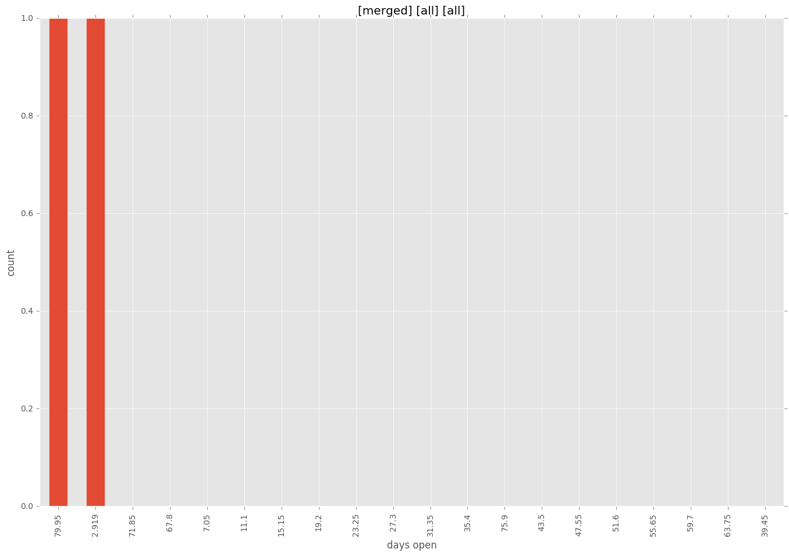

total issue counts
bugfix pull request: 1
pullrequest: 2
issue: 3
new plugin: 1
bug report: 3
issue history
pullrequest history
days open by issue type
all
count: 6
std: 41.7584322822
min: 0
max: 84
median: 5.0
mean: 30.1666666667
pullrequest
count: 0
std: nan
min: nan
max: nan
median: nan
mean: nan
bugfix pull request
count: 2
std: 0.0
min: 3
max: 3
median: 3.0
mean: 3.0
issue
count: 0
std: nan
min: nan
max: nan
median: nan
mean: nan
new plugin
count: 2
std: 0.0
min: 84
max: 84
median: 84.0
mean: 84.0
bug report
count: 2
std: 4.94974746831
min: 0
max: 7
median: 3.5
mean: 3.5
closures grouped by total days open

 
